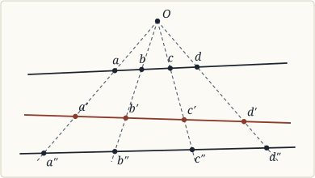
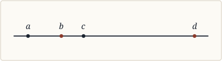
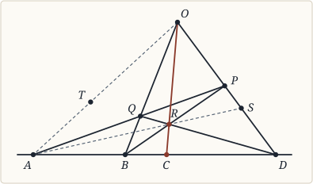

Projective Coordinates and the Complete Quadrilateral¶
Chapter III, Section A — Complete Quadrilateral Construction (§§ 111–114, pp. 122–126)
§ 111. Anharmonic ratio may and must be descriptively defined¶
f. §111 · p. p. 122111. The two mathematically fundamental things in projective Geometry are anharmonic ratio, and the quadrilateral construction. Everything else follows mathematically from these two. Now what is meant, in projective Geometry, by anharmonic ratio?

Fig. 6 (p. 123, § 111) — Central projection of collinear points $A, B, C, D$ from $O$ onto $A', B', C', D'$ with equal anharmonic ratio.¶
If we start from anharmonic ratio as ordinarily defined, we are met by the difficulty of its quantitative nature [1]. But among the properties deduced from this definition, many, if not most, are purely qualitative. The most fundamental of these is that, if through any four points in a straight line we draw four straight lines which meet in a point, and if we then draw a new straight line meeting these four, the four new points of intersection have the same anharmonic ratio as the four points we started with. Thus, in the figure, abcd, a′b′c′d′, a″b″c″d″, all have the same anharmonic ratio. The reciprocal relation holds for the anharmonic ratio of four straight lines. Here we have, plainly, the required basis for a qualitative definition. The definition must be as follows:
Two sets of four points each are defined as having the same anharmonic ratio, when (1) each set of four lies in one straight line, and (2) corresponding points of different sets lie two by two on four straight lines through a single point, or when both sets have this relation to any third set [2]. And reciprocally: Two sets of four straight lines are defined as having the same anharmonic ratio when (1) each set of four passes through a single point, and (2) corresponding lines of different sets pass, two by two, through four points in one straight line, or when both sets have this relation to any third set.
Two sets of points or of lines, which have the same anharmonic ratio, are treated by projective Geometry as equivalent: this qualitative equivalence replaces the quantitative equality of metrical Geometry, and is obviously included, by its definition, in the above account of projective transformations in general.
§ 112. The quadrilateral construction is essential to the projective definition of points,¶
f. §112 · p. p. 123112. We have next to consider the quadrilateral construction [3]. This has a double purpose: first, to define the important special case known as a harmonic range; and secondly, to afford an unambiguous and exhaustive method of assigning different numbers to different points. This last method has, again, a double purpose: first, the purpose of giving a convenient symbolism for describing and distinguishing different points, and of thus affording a means for the introduction of analysis; and secondly, of so assigning these numbers that, if they had the ordinary metrical significance, as distances from some point on the numbered straight line, they would yield –1 as the anharmonic ratio of a harmonic range, and that, if four points have the same anharmonic ratio as four others, so have the corresponding numbers. This last purpose is due to purely technical motives: it avoids the confusion with our preconceptions which would result from any other value for a harmonic range; it allows us, when metrical interpretations of projective results are desired, to make these interpretations without tedious numerical transformations, and it enables us to perform projective transformations by algebraical methods. At the same time, from the strictly projective point of view, as observed above, the numbers introduced have a purely conventional meaning; and until we pass to metrical Geometry, no reason can be shown for assigning the value –1 to a harmonic range. With this preliminary, let us see in what the quadrilateral construction consists.

Fig. 7 (p. 124, § 111) — Projective extension from four rays in one plane to a second plane via transversal $A''B''C''D''$.¶
§ 113. And can be projectively defined,¶
f. §113 · p. p. 124113. A harmonic range, in elementary Geometry, is one whose anharmonic ratio is –1, or one in which the three segments formed by the four points are in harmonic progression, or again, one in which the ratio of the two internal segments is equal to the ratio of the two external segments. If a, b, c, d be the four points, it is easily seen that these definitions are equivalent to one another: they give respectively:
$\frac{ab}{bc}$ / $\frac{ad}{dc}$ = – 1 , $\frac{1}{ab}$ – $\frac{1}{ac}$ = $\frac{1}{ac}$ – $\frac{1}{ad}$ , and $\frac{ab}{bc}$ = $\frac{ad}{cd}$ .
But as they are all quantitative, they cannot be used for our present purpose. Nor are any definitions which involve bisection of lines or angles available. We must have a definition which proceeds entirely by the help of straight lines and points, without measurement of distances or angles. Now from the above definitions of a harmonic range, we see that a, b, c, d have the same anharmonic ratio as c, b, a, d. This gives us the property we require for our definition. For it shows that, in a harmonic range, we can find a projective transformation which will interchange a and c. This is a necessary and sufficient condition for a harmonic range, and the quadrilateral construction is the general method for giving effect to it.

Fig. 8 (p. 125, § 113) — Von Staudt’s Complete Quadrilateral Construction of the harmonic conjugate $C$ to $A$ with respect to $B, D$.¶
Given any three points A, B, D in one straight line, the quadrilateral construction finds the point C harmonic to A with respect to B, D by the following method: Take any point O outside the straight line ABD, and join it to B and D. Through A draw any straight line cutting OD, OB in P and Q. Join DQ, BP, and let them intersect in R. Join OR, and let OR meet ABD in C. Then C is the point required.
To prove this, let DRQ meet OA in T, and draw AR, meeting OD in S. Then a projective transformation of A, B, C, D from R on to OD gives the points S, P, O, D, which, projected from A on to DQ, give R, Q, T, D. But these again, projected from O on to ABD, give C, B, A, D. Hence A, B, C, D can be projectively transformed into C, B, A, D, and therefore form a harmonic range. From this point, the proof that the construction is unique and general follows simply [4].
The introduction of numbers, by this construction, offers no difficulties of principle—except, indeed, those which always attend the application of number to continua—and may be studied satisfactorily in Klein’s Nicht-Euklid (I. p. 337 ff.). The principle of it is, to assign the numbers 0, 1, ∞ to A, B, D and therefore the number 2 to C, in order that the differences AB, AC, AD may be in harmonic progression. By taking B, C, D as a new triad corresponding to A, B, D, we find a point harmonic to B with respect to C, D and assign to it the number 3, and so on. In this way, we can obtain any number of points, and we are sure of having no number and no point twice over, so that our coordinates have the essential property of a unique correspondence with the points they denote, and vice versa.
§ 114. By the general principle of projective transformation¶
f. §114 · p. p. 126114. The point of importance in the above construction, however, and the reason why I have reproduced it in detail, is that it proceeds entirely by means of the general principles of transformation enunciated above. From this stage onwards, everything is effected by means of the two fundamental ideas we have just discussed, and everything, therefore, depends on our general principle of projective equivalence. This principle, as regards two dimensions, may be stated more simply than in the passage quoted from Cremona. It starts, in two dimensions, from the following definitions:
To project the points A, B, C, D … from a centre O, is to construct the straight lines OA, OB, OC, OD….
To cut a number of straight lines a, b, c, d … by a transversal s, is to construct the points sa, sb, sc, sd…. [5]
The successive application of these two operations, provided the original figure consisted of points on one straight line or of straight lines through one point, gives a figure projectively indistinguishable from the former figure; and hence, by extension, if any points in one straight line in the original figure lie in one straight line in the derived figure, and reciprocally for straight lines through points, the two operations have given projectively similar figures. This general principle may be regarded as consisting of two parts, according to the order of the operations: if we begin with projection and end with section, we transform a figure of points into another figure of points; by the converse order, we transform a figure of lines into another figure of lines.
Footnotes